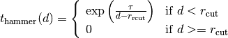
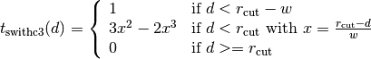
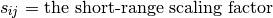
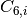
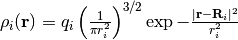
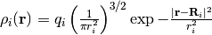

2. yaff.pes – Force-field potential energy surfaces (PESs)¶
2.1. yaff.pes.dlist – Short-range neighbor lists for covalent energy terms¶
Short-range neighbor lists for covalent energy terms
The short-range neighbor lits are called Delta lists. They are used for the covalent energy terms that do not allow for bond breaking.
The delta list contains all relative vectors that are needed to evaluate the covalent energy terms. The minimum image convention (MIC) is used to make sure that periodic boundary conditions are taken into account. The current implementation of the MIC in Yaff works in principle only for orthorhombic cells. In the general case of a triclinic cell, the Yaff implementation is known to fail in some corner cases, e.g. in small and very skewed unit cells. The derivative of the energy towards the components of the relative vectors is computed if the ForceField.compute routine requires energy derivatives.
The class yaff.pes.dlist.DeltaList is intimately related to classes yaff.pes.iclist.InternalCoordinateList and yaff.pes.vlist.ValenceList. They work together, just like layers in a neural network, and they use the back-propagation algorithm to compute partial derivatives. The order of the layers is as follows:
DeltaList <--> InternalCoordinateList <--> ValenceList
The class yaff.pes.ff.ForcePartValence ties these three lists together. The basic idea of the back-propagation algorithm is explained in the section The back-propagation algorithm for the computation of energy derivatives.
- class yaff.pes.dlist.DeltaList(system)¶
Bases: object
Class to store, manage and evaluate the delta list.
Arguments:
- system
- A System instance.
- add_delta(i, j)¶
Register a new relative vector in the delta list
Arguments:
- i, j
- Indexes of the first and second atom. The vector points from i to j.
Returns:
- row
- The row index of the newly registered relative vector, for later reference.
- sign
- Is -1 when i and j were swapped during the registration. Is +1 otherwise.
- forward()¶
Evaluate the relative vectors for self.system.pos
The actual computation is carried out by a low-level C routine.
- back(gpos, vtens)¶
Derive gpos and virial from the derivatives towards the relative vectors
The actual computation is carried out by a low-level C routine.
2.2. yaff.pes.ext – Low-level C routines¶
Low-level C routines
This extension module is used by various modules of the yaff.pes package.
- class yaff.pes.ext.Cell¶
Bases: object
Cell(ndarray rvecs) Representation of periodic boundary conditions.
0, 1, 2 and 3 dimensional systems are supported. The cell vectors need not to be orthogonal.Arguments:
- rvecs
- A numpy array with at most three cell vectors, layed out as rows in a rank-2 matrix. For non-periodic systems, this array must have shape (0,3).
- add_vec(self, ndarray delta, ndarray r)¶
Add a linear combination of cell vectors, r, to delta in-place
- compute_distances(self, ndarray output, ndarray pos0, ndarray pos1=None, ndarray pairs=None, bool do_include=False, long nimage=0)¶
Computes all distances between the given coordinates
Arguments:
- output
- An numpy vector of the proper length that will be used to store all the distances.
- pos0
- An array with Cartesian coordinates
Optional arguments:
- pos1
- A second array with Cartesian coordinates
- pairs
A sorted array of atom pairs. When do_include==False, this list will be excluded from the computation. When do_include==True, only these pairs are considered when computing distances.
The indexes in this array refer to rows of pos0 or pos1. If pos1 is not given, both columns refer to rows of pos0. If pos1 is given, the first column refers to rows of pos0 and the second column refers to rows of pos1. The rows in the pairst array should be sorted lexicographically, first along the first column, then along the second column.
- do_include
- True or False, controls how the pairs list is interpreted. When set to True, nimage must be zero and the pairs attribute must be a non-empty array.
- nimage
- The number of cell images to consider in the computation of the pair distances. By default, this is zero, meaning that only the minimum image convention is used.
This routine can operate in two different ways, depending on the presence/absence of the argument pos1. If not given, all distances between points in pos0 are computed and the length of the output array is len(pos0)*(len(pos0)-1)/2. If pos1 is given, all distances are computed between a point in pos0 and a point in pos1 and the length of the output array is len(pos0)*len(pos1).
In both cases, some pairs of atoms may be excluded from the output with the exclude argument. In typical cases, this list of excluded pairs is relatively short. In case, the exclude argument is present the number of computed distances is less than explained above, but it is recommended to still use those sizes in case some pairs in the excluded list are not applicable.
- gspacings¶
Cell._get_gspacings(self, full=False) The (orthogonal) spacing between opposite sides of the reciprocal-space unit cell.
- gvecs¶
Cell._get_gvecs(self, full=False) The reciporcal-space cell vectors, layed out as rows.
- mic(self, ndarray delta)¶
Apply the minimum image convention to delta in-place
- nvec¶
Cell._get_nvec(self) The number of cell vectors
- parameters¶
Cell._get_parameters(self) The cell parameters (lengths and angles)
- rspacings¶
Cell._get_rspacings(self, full=False) The (orthogonal) spacing between opposite sides of the real-space unit cell.
- rvecs¶
Cell._get_rvecs(self, full=False) The real-space cell vectors, layed out as rows.
- to_center(self, ndarray pos)¶
Return the corresponding position in the central cell
- update_rvecs(self, ndarray rvecs)¶
Change the cell vectors and recompute the reciprocal cell vectors.
- rvecs
- A numpy array with at most three cell vectors, layed out as rows in a rank-2 matrix. For non-periodic systems, this array must have shape (0,3).
- volume¶
Cell._get_volume(self) The generalize volume of the unit cell (length, area or volume)
- yaff.pes.ext.nlist_status_init(rmax)¶
nlist_status_init(rmax)
Creates a new nlists_status array
The array consists of seven integer elements with the following meaning:
- r0: relative image index along a direction
- r1: relative image index along b direction
- r2: relative image index along c direction
- a: atom index of first atom in pair
- b: atom index of second atom in pair
- sign: +1 or -1, to swap the relative vector such that a > b
- nrow: number of rows consumed
- yaff.pes.ext.nlist_build(ndarray pos, double rcut, ndarray rmax, Cell unitcell, ndarray status, ndarray neighs)¶
Scan the system for all pairs that have a distance smaller than rcut until the neighs array is filled or all pairs are considered
Arguments:
- pos
- The numpy array with the atomic positions, shape (natom, 3)
- rcut
- The cutoff radius
- rmax
- The number of periodic images to visit along each cell vector, shape (nrvec,)
- unitcell
- An instance of the UnitCell class, describing the periodic boundary conditions.
- status
- The status array, either obtained from nlist_status_init, or as it was modified by the last call to this function
- neighs
- The neighbor list array. One element is of the datatype nlist.neigh_row_type.
Returns:
True if the neighbor list is complete. False otherwise
- yaff.pes.ext.nlist_status_finish(status)¶
- status
- The status array, either obtained from nlist_status_init, or as it was modified by the last call to this function
Returns the number of rows generated by the neighbor list algorithm
- yaff.pes.ext.nlist_recompute(ndarray pos, ndarray pos_old, Cell unitcell, ndarray neighs)¶
Recompute all relative vectors and distances in the neighbor list.
Arguments:
- pos
- The numpy array with the atomic positions, shape (natom, 3)
- pos_old
- The positions used during the last neighbor list rebuild. These are used to make sure that there are no sudden jumps in the relative vectors due to the minimum image convention.
- unitcell
- An instance of the UnitCell class, describing the periodic boundary conditions.
- neighs
- The neighbor list array. One element is of the datatype nlist.neigh_row_type.
- yaff.pes.ext.nlist_inc_r(Cell unitcell, ndarray r, ndarray rmax)¶
Increment the vector r to the location of the next periodic image.
Arguments:
- unitcell
- An instance of the UnitCell class, describing the periodic boundary conditions.
- r
- An array of integers describing the current image. This will be incremented in place.
- rmax
- An array of integers specifying the range of periodic images that must be visited along each cell vector.
Returns:
True if the counter r was at the last image and is therefore reset to the first image. False in all other cases.
Description:
This Python wrapper is only present for debugging purposes. Note that this routine visits only half of the periodic images because the other half contains exactly the same relative vectors.
- class yaff.pes.ext.Hammer¶
Bases: yaff.pes.ext.Truncation
An old-fashioned and poor truncation scheme.
Arguments:
- tau
- The tau parameter in the mathematical expression below.
Don’t use this truncation scheme. Only present for historical reasons. The mathematical form is as follows:

- get_log(self)¶
get_log()
Return a string suitable for the screen logger
- tau¶
Hammer._get_tau(self) The Tau parameter of the truncation function
- class yaff.pes.ext.Switch3¶
Bases: yaff.pes.ext.Truncation
A simple and good truncation scheme.
Arguments:
- width
- The width parameter,
 , in the mathematical expression below.
, in the mathematical expression below.
This is the recommended truncation scheme in Yaff. It has the following mathematical form:

- get_log(self)¶
get_log()
Return a string suitable for the screen logger
- width¶
Switch3._get_width(self) The width parameter of the truncation scheme
- class yaff.pes.ext.PairPot¶
Bases: object
Base class for the pair potentials
- compute(self, ndarray neighs, ndarray stab, ndarray gpos, ndarray vtens, long nneigh)¶
Compute the pairwise interactions
Arguments:
- neighs
- The neighbor list array. One element is of the datatype nlist.neigh_row_type.
- stab
- The array with short-range scalings. Each element is of the datatype pair_pot.scaling_row_type
- gpos
- The output array for the derivative of the energy towards the atomic positions. If None, these derivatives are not computed.
- vtens
- The output array for the virial tensor. If none, it is not computed.
- nneigh
- The number of records to consider in the neighbor list.
Returns: the energy.
- get_truncation(self)¶
Returns the current truncation scheme
- rcut¶
PairPot._get_rcut(self) The cutoff parameter
- class yaff.pes.ext.PairPotLJ¶
Bases: yaff.pes.ext.PairPot
Lennard-Jones pair potential:
Energy:
![E_\text{LJ} = \sum_{i=1}^{N} \sum_{j=i+1}^{N} 4 s_{ij} \epsilon_{ij} \left[
\left(\frac{\sigma_{ij}}{d_{ij}}\right)^{12} - \left(\frac{\sigma_{ij}}{d_{ij}}\right)^6
\right]](_images/math/5d589e6dedad57c66af6bcc3835186f7dedaa4b4.png)
with



Arguments:
- sigmas
- An array with sigma parameters, one for each atom, shape (natom,)
- epsilons
- An array with epsilon parameters, one for each atom, shape (natom,)
- rcut
- The cutoff radius
Optional arguments:
- tr
- The truncation scheme, an instance of a subclass of Truncation. When not given, no truncation is applied
- epsilons¶
PairPotLJ._get_epsilons(self) The array with epsilon parameters
- log(self)¶
Write some suitable post-initialization screen log
- name = 'lj'¶
- sigmas¶
PairPotLJ._get_sigmas(self) The array with sigma parameters
- class yaff.pes.ext.PairPotMM3¶
Bases: yaff.pes.ext.PairPot
The MM3 version of the Lennard-Jones pair potential
Energy:
![E_\text{MM3} = \sum_{i=1}^{N} \sum_{j=i+1}^{N} s_{ij} \epsilon_{ij} \left[
1.84\times10^{5} \exp\left(\frac{\sigma_{ij}}{d_{ij}}\right) - 2.25\left(\frac{\sigma_{ij}}{d_{ij}}\right)^6
\right]](_images/math/5cba9e52e7fe55dff82440e1032b88bd3a4523cd.png)
with
Arguments:
- sigmas
- An array with sigma parameters, one for each atom, shape (natom,)
- epsilons
- An array with epsilon parameters, one for each atom, shape (natom,)
- onlypaulis
- An array integers. When non-zero for both atoms in a pair, only the repulsive wall is computed.
- rcut
- The cutoff radius
Optional arguments:
- tr
- The truncation scheme, an instance of a subclass of Truncation. When not given, no truncation is applied
- epsilons¶
PairPotMM3._get_epsilons(self) The array with epsilon parameters
- log(self)¶
Write some suitable post-initialization screen log
- name = 'mm3'¶
- onlypaulis¶
PairPotMM3._get_onlypaulis(self) The array with the only-Pauli flag
- sigmas¶
PairPotMM3._get_sigmas(self) The array with sigma parameters
- class yaff.pes.ext.PairPotGrimme¶
Bases: yaff.pes.ext.PairPot
- c6¶
PairPotGrimme._get_c6(self)
- log(self)¶
- name = 'grimme'¶
- r0¶
PairPotGrimme._get_r0(self)
- class yaff.pes.ext.PairPotExpRep¶
Bases: yaff.pes.ext.PairPot
Exponential repulsion

The pair parameters can be provided explicitly, or can be derived from atomic parameters using two possible mixing rules for each parameter:
- GEOMETRIC mixing for
 :
: 
- GEOMETRIC_COR mixing for :
 where
where  is a configurable parameter
is a configurable parameter - ARITHMETIC mixing for
 :
: 
- ARITHMETIC_COR mixing for :
 where is a configurable parameter
where is a configurable parameter
Arguments:
- ffatype_ids
- An array with atom type IDs for each atom. The IDs are integer indexes for the atom types that start counting from zero. shape = (natom,).
- amp_cross
- A 2D array of amplitude cross parameters ()
- b_cross
- A 2D array of decay cross parameters ()
- rcut
- The cutoff radius
Optional arguments:
- tr
- The truncation scheme, an instance of a subclass of Truncation. When not given, no truncation is applied
- amps
- A 1D array of amplitude diagonal parameters (
 )
) - amp_mix
- An integer ID that determines the mixing rule for the a parameter. 0=GEOMETRIC, 1=GEOMETRIC_COR.
- amp_mix_coeff
- The parameter for the corrected geometric mixing rule.
- bs
- A 1D array of decay diagonal parameters (
 )
) - b_mix
- An integer ID that determines the mixing rule for the B parameter. 0=ARITHMETIC, 1=ARITHMETIC_COR.
- b_mix_coeff
- The parameter for the corrected arithmetic mixing rule.
The mixing rules are only in effect when the optional diagonal parameters are given. Only when the cross parameters are zero (in the arguments amp_cross and b_cross), these numbers would be overwritten by the mixing rules.
- amp_cross¶
PairPotExpRep._get_amp_cross(self) The amplitude cross parameters
- b_cross¶
PairPotExpRep._get_b_cross(self) The decay cross parameters
- log(self)¶
Print suitable initialization info on screen.
- name = 'exprep'¶
- GEOMETRIC mixing for
- class yaff.pes.ext.PairPotDampDisp¶
Bases: yaff.pes.ext.PairPot
Damped dispersion interaction
Energy:

where the damping factor
 is optional. When used
it has the Tang-Toennies form:
is optional. When used
it has the Tang-Toennies form:
The pair parameters
 and are derived from atomic
parameters using mixing rules, unless they are provided explicitly for a given
pair of atom types. These are the mixing rules:
and are derived from atomic
parameters using mixing rules, unless they are provided explicitly for a given
pair of atom types. These are the mixing rules:

Arguments:
- ffatype_ids
- An array with atom type IDs for each atom. The IDs are integer indexes for the atom types that start counting from zero. shape = (natom,).
- c6_cross
- The cross parameters.
- b_cross
- The cross parameters. When zero, the damping factor
is set to one.
- rcut
- The cutoff radius
Optional arguments:
- tr
- The truncation scheme, an instance of a subclass of Truncation. When not given, no truncation is applied
- c6s
- The diagonal  parameters
- bs
- The diagonal parameters
- vols
- The atomic volumes,
 .
.
The three last optional arguments are used to determine pair parameters from the mixing rules. These mixing rules are only applied of the corresponding cross parameters are initially set to zero in the arrays c6_corss and b_cross.
- b_cross¶
PairPotDampDisp._get_b_cross(self) The damping cross parameters
- c6_cross¶
PairPotDampDisp._get_c6_cross(self) The C6 cross parameters
- log(self)¶
Print suitable initialization info on screen.
- name = 'dampdisp'¶
- class yaff.pes.ext.PairPotEI¶
Bases: yaff.pes.ext.PairPot
Short-range contribution to the electrostatic interaction between point charges
Arguments:
- charges
- An array of atomic charges, shape = (natom,)
- alpha
- The parameter in the Ewald summation scheme. When set to zero, the interaction between point charges is computed without any long-range screening.
- rcut
- The cutoff radius
Optional arguments:
- tr
- The truncation scheme, an instance of a subclass of Truncation. When not given, no truncation is applied
- dielectric
- A relative dielectric permitivity that just scales the Coulomb interaction.
- radii
- An array of atomic radii, shape = (natom,). The charge distribution
of atom
 with radius
with radius  centered at
is of a Gaussian shape:

When the atomic radius equals zero, the charge distribution becomes a
point monopole.
Only implemented for non-periodic systems
centered at
is of a Gaussian shape:

When the atomic radius equals zero, the charge distribution becomes a
point monopole.
Only implemented for non-periodic systems
- alpha¶
PairPotEI._get_alpha(self) The alpha parameter in the Ewald summation method
- charges¶
PairPotEI._get_charges(self) The atomic charges
- dielectric¶
PairPotEI._get_dielectric(self) The scalar relative permittivity
- log(self)¶
Print suitable initialization info on screen.
- name = 'ei'¶
- radii¶
PairPotEI._get_radii(self) The atomic radii
- class yaff.pes.ext.PairPotEIDip¶
Bases: yaff.pes.ext.PairPot
Short-range contribution to the electrostatic interaction between point charges and point dipoles. Only works for non-periodic systems and without truncation scheme
Arguments:
- charges
- An array of atomic charges, shape = (natom,)
- dipoles
- An array of atomic point dipoles, shape = (natom,3)
- poltens_i
- An array that gives the inverse atomic polarizabilities, shape = (3natom, 3)
TODO: What about other parameters, for example from EEM? More general way to include necessary parameters.
Optional arguments:
- tr
- The truncation scheme, an instance of a subclass of Truncation. When not given, no truncation is applied
- alpha¶
PairPotEIDip._get_alpha(self) The alpha parameter in the Ewald summation method
- charges¶
PairPotEIDip._get_charges(self) The atomic charges
- compute(self, ndarray neighs, ndarray stab, ndarray gpos, ndarray vtens, long nneigh)¶
- dipoles¶
PairPotEIDip._get_dipoles(self) The atomic charges
- log(self)¶
Print suitable initialization info on screen.
- name = 'eidip'¶
- poltens_i¶
PairPotEIDip._get_poltens_i(self) The atomic charges
- yaff.pes.ext.compute_ewald_reci(ndarray pos, ndarray charges, Cell unitcell, double alpha, ndarray gmax, double gcut, double dielectric, ndarray gpos, ndarray work, ndarray vtens)¶
Compute the reciprocal interaction term in the Ewald summation scheme
Arguments:
- pos
- The atomic positions. numpy array with shape (natom,3).
- charges
- The atomic charges. numpy array with shape (natom,).
- unitcell
- An instance of the Cell class that describes the periodic boundary conditions.
- alpha
- The parameter from the Ewald summation scheme.
- gmax
- The maximum range of periodic images in reciprocal space to be considered for the Ewald sum. integer numpy array with shape (3,). Each element gives the range along the corresponding reciprocal cell vector. The range along each axis goes from -gmax[0] to gmax[0] (inclusive).
- gcut
- The cutoff in reciprocal space. The caller is responsible for the compatibility of gcut with gmax.
- dielectric
- The scalar relative permittivity of the system.
- gpos
- If not set to None, the Cartesian gradient of the energy is stored in this array. numpy array with shape (natom, 3).
- work
- If gpos is given, this work array must also be present. Its contents will be overwritten. numpy array with shape (2*natom,).
- vtens
- If not set to None, the virial tensor is computed and stored in this array. numpy array with shape (3, 3).
- yaff.pes.ext.compute_ewald_reci_dd(ndarray pos, ndarray charges, ndarray dipoles, Cell unitcell, double alpha, ndarray gmax, double gcut, ndarray gpos, ndarray work, ndarray vtens)¶
Compute the reciprocal interaction term in the Ewald summation scheme
Arguments:
- pos
- The atomic positions. numpy array with shape (natom,3).
- charges
- The atomic charges. numpy array with shape (natom,).
- dipoles
- The atomic dipoles. numpy array with shape (natom,3).
- unitcell
- An instance of the Cell class that describes the periodic boundary conditions.
- alpha
- The parameter from the Ewald summation scheme.
- gmax
- The maximum range of periodic images in reciprocal space to be considered for the Ewald sum. integer numpy array with shape (3,). Each element gives the range along the corresponding reciprocal cell vector. The range along each axis goes from -gmax[0] to gmax[0] (inclusive).
- gcut
- The cutoff in reciprocal space. The caller is responsible for the compatibility of gcut with gmax.
- gpos
- If not set to None, the Cartesian gradient of the energy is stored in this array. numpy array with shape (natom, 3).
- work
- If gpos is given, this work array must also be present. Its contents will be overwritten. numpy array with shape (2*natom,).
- vtens
- If not set to None, the virial tensor is computed and stored in this array. numpy array with shape (3, 3).
- yaff.pes.ext.compute_ewald_corr_dd(ndarray pos, ndarray charges, ndarray dipoles, Cell unitcell, double alpha, ndarray stab, ndarray gpos, ndarray vtens)¶
Compute the corrections to the reciprocal Ewald term due to scaled short-range non-bonding interactions.
Arguments:
- pos
- The atomic positions. numpy array with shape (natom,3).
- charges
- The atomic charges. numpy array with shape (natom,).
- unitcell
- An instance of the Cell class that describes the periodic boundary conditions.
- alpha
- The parameter from the Ewald summation scheme.
- stab
- The table with (sorted) pairs of atoms whose electrostatic interactions are scaled. Each record corresponds to one pair and contains the corresponding amount of scaling. See pair_pot.scaling_row_type
- gpos
- If not set to None, the Cartesian gradient of the energy is stored in this array. numpy array with shape (natom, 3).
- vtens
- If not set to None, the virial tensor is computed and stored in this array. numpy array with shape (3, 3).
- yaff.pes.ext.compute_ewald_corr(ndarray pos, ndarray charges, Cell unitcell, double alpha, ndarray stab, double dielectric, ndarray gpos, ndarray vtens)¶
Compute the corrections to the reciprocal Ewald term due to scaled short-range non-bonding interactions.
Arguments:
- pos
- The atomic positions. numpy array with shape (natom,3).
- charges
- The atomic charges. numpy array with shape (natom,).
- unitcell
- An instance of the Cell class that describes the periodic boundary conditions.
- alpha
- The parameter from the Ewald summation scheme.
- stab
- The table with (sorted) pairs of atoms whose electrostatic interactions are scaled. Each record corresponds to one pair and contains the corresponding amount of scaling. See pair_pot.scaling_row_type
- dielectric
- The scalar relative permittivity of the system.
- gpos
- If not set to None, the Cartesian gradient of the energy is stored in this array. numpy array with shape (natom, 3).
- vtens
- If not set to None, the virial tensor is computed and stored in this array. numpy array with shape (3, 3).
- yaff.pes.ext.dlist_forward(ndarray pos, Cell unitcell, ndarray deltas, long ndelta)¶
Compute the relative vectors in the delta list
Arguments:
- pos
- The atomic positions. numpy array with shape (natom,3).
- unitcell
- An instance of the Cell class that describes the periodic boundary conditions.
- deltas
- The delta list array
- ndelta
- The number of records in the delta list that need to be computed.
- yaff.pes.ext.dlist_back(ndarray gpos, ndarray vtens, ndarray deltas, long ndelta)¶
The back-propagation step of the delta list
Arguments:
- gpos
- If not set to None, the Cartesian gradient of the energy is stored in this array. numpy array with shape (natom, 3).
- vtens
- If not set to None, the virial tensor is computed and stored in this array. numpy array with shape (3, 3).
- deltas
- The delta list array
- ndelta
- The number of records in the delta list that need to be computed.
- yaff.pes.ext.iclist_forward(ndarray deltas, ndarray ictab, long nic)¶
Compute internal coordinates based on relative vectors
Arguments:
- deltas
- The delta list array (input)
- ictab
- The table with internal coordinates that must be computed (input and output).
- nic
- The number of records in the ictab array to compute.
- yaff.pes.ext.iclist_back(ndarray deltas, ndarray ictab, long nic)¶
The back-propagation step in the internal coordinate list
- deltas
- The delta list array (output)
- ictab
- The table with internal coordinates that must be computed (input).
- nic
- The number of records in the ictab array to compute.
This routine transforms the partial derivatives of the energy towards the internal coordinates, stored in ictab, into partial derivatives of the energy towards relative vectors, added to deltas.
- yaff.pes.ext.vlist_forward(ndarray ictab, ndarray vtab, long nv)¶
Computes valence energy terms based on a list of internal coordinates
Arguments:
- ictab
- The table with internal coordinates (input).
- vtab
- The table with covalent energy terms (input and output).
- nv
- The number of records to consider in vtab.
- yaff.pes.ext.vlist_back(ndarray ictab, ndarray vtab, long nv)¶
The back-propagation step in the valence list.
Arguments:
- ictab
- The table with internal coordinates (output).
- vtab
- The table with covalent energy terms (input).
- nv
- The number of records to consider in vtab.
This routine computes the derivatives of the energy of each term towards the internal coordinates and adds the results to the ictab array.
- yaff.pes.ext.compute_grid3d(ndarray center, Cell unitcell, ndarray egrid)¶
2.3. yaff.pes.ff – Force field models¶
Force field models
This module contains the force field computation interface that is used by the yaff.sampling package.
The ForceField class is the main item in this module. It acts as container for instances of subclasses of ForcePart. Each ForcePart subclass implements a typical contribution to the force field energy, e.g. ForcePartValence computes covalent interactions, ForcePartPair computes pairwise (non-bonding) interactions, and so on. The ForceField object also contains one neighborlist object, which is used by all ForcePartPair objects. Actual computations are done through the compute method of the ForceField object, which calls the compute method of all the ForceParts and adds up the results.
- class yaff.pes.ff.ForcePart(name, system)¶
Bases: object
Base class for anything that can compute energies (and optionally gradient and virial) for a System object.
Arguments:
- name
- A name for this part of the force field. This name must adhere to the following conventions: all lower case, no white space, and short. It is used to construct part_* attributes in the ForceField class, where * is the name.
- system
- The system to which this part of the FF applies.
- clear()¶
Fill in nan values in the cached results to indicate that they have become invalid.
- compute(gpos=None, vtens=None)¶
Compute the energy and optionally some derivatives for this FF (part)
The only variable inputs for the compute routine are the atomic positions and the cell vectors, which can be changed through the update_rvecs and update_pos methods. All other aspects of a force field are considered to be fixed between subsequent compute calls. If changes other than positions or cell vectors are needed, one must construct new ForceField and/or ForcePart objects.
Optional arguments:
- gpos
- The derivatives of the energy towards the Cartesian coordinates of the atoms. (‘g’ stands for gradient and ‘pos’ for positions.) This must be a writeable numpy array with shape (N, 3) where N is the number of atoms.
- vtens
- The force contribution to the pressure tensor. This is also known as the virial tensor. It represents the derivative of the energy towards uniform deformations, including changes in the shape of the unit cell. (v stands for virial and ‘tens’ stands for tensor.) This must be a writeable numpy array with shape (3, 3).
The energy is returned. The optional arguments are Fortran-style output arguments. When they are present, the corresponding results are computed and added to the current contents of the array.
- update_pos(pos)¶
Let the ForcePart object know that the atomic positions have changed.
Arguments:
- pos
- The new atomic coordinates.
- update_rvecs(rvecs)¶
Let the ForcePart object know that the cell vectors have changed.
Arguments:
- rvecs
- The new cell vectors.
- class yaff.pes.ff.ForceField(system, parts, nlist=None)¶
Bases: yaff.pes.ff.ForcePart
A complete force field model.
Arguments:
- system
- An instance of the System class.
- parts
- A list of instances of sublcasses of ForcePart. These are the different types of contributions to the force field, e.g. valence interactions, real-space electrostatics, and so on.
Optional arguments:
- nlist
- A NeighborList instance. This is required if some items in the parts list use this nlist object.
- add_part(part)¶
- classmethod generate(system, parameters, **kwargs)¶
Create a force field for the given system with the given parameters.
Arguments:
- system
- An instance of the System class
- parameters
- Three types are accepted: (i) the filename of the parameter file, which is a text file that adheres to YAFF parameter format, (ii) a list of such filenames, or (ii) an instance of the Parameters class.
See the constructor of the yaff.pes.generator.FFArgs class for the available optional arguments.
This method takes care of setting up the FF object, and configuring all the necessary FF parts. This is a lot easier than creating an FF with the default constructor. Parameters for atom types that are not present in the system, are simply ignored.
- update_pos(pos)¶
- update_rvecs(rvecs)¶
- class yaff.pes.ff.ForcePartPair(system, nlist, scalings, pair_pot)¶
Bases: yaff.pes.ff.ForcePart
A pairwise (short-range) non-bonding interaction term.
This part can be used for the short-range electrostatics, Van der Waals terms, etc. Currently, one has to use multiple ForcePartPair objects in a ForceField in order to combine different types of pairwise energy terms, e.g. to combine an electrostatic term with a Van der Waals term. (This may be changed in future to improve the computational efficiency.)
Arguments:
- system
- The system to which this pairwise interaction applies.
- nlist
- A NeighborList object. This has to be the same as the one passed to the ForceField object that contains this part.
- scalings
- A Scalings object. This object contains all the information about the energy scaling of pairwise contributions that are involved in covalent interactions. See yaff.pes.scalings.Scalings for more details.
- pair_pot
- An instance of the PairPot built-in class from yaff.pes.ext.
- class yaff.pes.ff.ForcePartEwaldReciprocal(system, alpha, gcut=0.35, dielectric=1.0)¶
Bases: yaff.pes.ff.ForcePart
The long-range contribution to the electrostatic interaction in 3D periodic systems.
Arguments:
- system
- The system to which this interaction applies.
- alpha
- The alpha parameter in the Ewald summation method.
Optional arguments:
- gcut
- The cutoff in reciprocal space.
- dielectric
- The scalar relative permittivity of the system.
- update_gmax()¶
This routine must be called after the attribute self.gmax is modified.
- update_rvecs(rvecs)¶
- class yaff.pes.ff.ForcePartEwaldReciprocalDD(system, alpha, gcut=0.35)¶
Bases: yaff.pes.ff.ForcePart
The long-range contribution to the dipole-dipole electrostatic interaction in 3D periodic systems.
Arguments:
- system
- The system to which this interaction applies.
- alpha
- The alpha parameter in the Ewald summation method.
- gcut
- The cutoff in reciprocal space.
- update_gmax()¶
This routine must be called after the attribute self.gmax is modified.
- update_rvecs(rvecs)¶
- class yaff.pes.ff.ForcePartEwaldCorrectionDD(system, alpha, scalings)¶
Bases: yaff.pes.ff.ForcePart
Correction for the double counting in the long-range term of the Ewald sum.
This correction is only needed if scaling rules apply to the short-range electrostatics.
Arguments:
- system
- The system to which this interaction applies.
- alpha
- The alpha parameter in the Ewald summation method.
- scalings
- A Scalings object. This object contains all the information about the energy scaling of pairwise contributions that are involved in covalent interactions. See yaff.pes.scalings.Scalings for more details.
- class yaff.pes.ff.ForcePartEwaldCorrection(system, alpha, scalings, dielectric=1.0)¶
Bases: yaff.pes.ff.ForcePart
Correction for the double counting in the long-range term of the Ewald sum.
This correction is only needed if scaling rules apply to the short-range electrostatics.
Arguments:
- system
- The system to which this interaction applies.
- alpha
- The alpha parameter in the Ewald summation method.
- scalings
- A Scalings object. This object contains all the information about the energy scaling of pairwise contributions that are involved in covalent interactions. See yaff.pes.scalings.Scalings for more details.
Optional arguments:
- dielectric
- The scalar relative permittivity of the system.
- class yaff.pes.ff.ForcePartEwaldNeutralizing(system, alpha, dielectric=1.0)¶
Bases: yaff.pes.ff.ForcePart
Neutralizing background correction for 3D periodic systems that are charged.
This term is only required of the system is not neutral.
Arguments:
- system
- The system to which this interaction applies.
- alpha
- The alpha parameter in the Ewald summation method.
Optional arguments:
- dielectric
- The scalar relative permittivity of the system.
- class yaff.pes.ff.ForcePartValence(system)¶
Bases: yaff.pes.ff.ForcePart
The covalent part of a force-field model.
The covalent force field is implemented in a three-layer approach, similar to the implementation of a neural network:
- The first layer consists of a yaff.pes.dlist.DeltaList object that computes all the relative vectors needed for the internal coordinates in the covalent energy terms. This list is automatically built up as energy terms are added with the add_term method. This list also takes care of transforming derivatives of the energy towards relative vectors into derivatives of the energy towards Cartesian coordinates and the virial tensor.
- The second layer consist of a yaff.pes.iclist.InternalCoordinateList object that computes the internal coordinates, based on the DeltaList. This list is also automatically built up as energy terms are added. The same list is also responsible for transforming derivatives of the energy towards internal coordinates into derivatives of the energy towards relative vectors.
- The third layers consists of a yaff.pes.vlist.ValenceList object. This list computes the covalent energy terms, based on the result in the InternalCoordinateList. This list also computes the derivatives of the energy terms towards the internal coordinates.
The computation of the covalent energy is the so-called forward code path, which consists of running through steps 1, 2 and 3, in that order. The derivatives of the energy are computed in the so-called backward code path, which consists of taking steps 1, 2 and 3 in reverse order. This basic idea of back-propagation for the computation of derivatives comes from the field of neural networks. More details can be found in the chapter, The back-propagation algorithm for the computation of energy derivatives.
Arguments:
- system
- An instance of the System class.
- add_term(term)¶
Add a new term to the covalent force field.
Arguments:
- term
- An instance of the class yaff.pes.ff.vlist.ValenceTerm.
In principle, one should add all energy terms before calling the compute method, but with the current implementation of Yaff, energy terms can be added at any time. (This may change in future.)
- class yaff.pes.ff.ForcePartPressure(system, pext)¶
Bases: yaff.pes.ff.ForcePart
Applies a constant istropic pressure.
Arguments:
- system
- An instance of the System class.
- pext
- The external pressure. (Positive will shrink the system.) In case of 2D-PBC, this is the surface tension. In case of 1D, this is the linear strain.
This force part is only applicable to systems that are periodic.
- class yaff.pes.ff.ForcePartGrid(system, grids)¶
Bases: yaff.pes.ff.ForcePart
Energies obtained by grid interpolation.
Arguments:
- system
- An instance of the System class.
- grids
- A dictionary with (ffatype, grid) items. Each grid must be a three-dimensional array with energies.
This force part is only applicable to systems that are 3D periodic.
2.4. yaff.pes.generator – Automatically generate force field models¶
Automatically generate force field models
This module contains all the machinery needed to support the yaff.pes.ff.ForceField.generate() method.
- class yaff.pes.generator.FFArgs(rcut=18.89726133921252, tr=<yaff.pes.ext.Switch3 object at 0x2d50c90>, alpha_scale=3.5, gcut_scale=1.1, skin=0, smooth_ei=False, reci_ei='ewald')¶
Bases: object
Data structure that holds all arguments for the ForceField constructor
The attributes of this object are gradually filled up by the various generators based on the data in the ParsedPars object.
Optional arguments:
Some optional arguments only make sense if related parameters in the parameter file are present.
- rcut
- The real space cutoff used by all pair potentials.
- tr
- Default truncation model for everything except the electrostatic interactions. The electrostatic interactions are not truncated by default.
- alpha_scale
- Determines the alpha parameter in the Ewald summation based on the real-space cutoff: alpha = alpha_scale / rcut. Higher values for this parameter imply a faster convergence of the reciprocal terms, but a slower convergence in real-space.
- gcut_scale
- Determines the reciprocale space cutoff based on the alpha parameter: gcut = gcut_scale * alpha. Higher values for this parameter imply a better convergence in the reciprocal space.
- skin
- The skin parameter for the neighborlist.
- smooth_ei
- Flag for smooth truncations for the electrostatic interactions.
- reci_ei
- The method to be used for the reciprocal contribution to the electrostatic interactions in the case of periodic systems. This must be one of ‘ignore’ or ‘ewald’. The ‘ewald’ option is only supported for 3D periodic systems.
The actual value of gcut, which depends on both gcut_scale and alpha_scale, determines the computational cost of the reciprocal term in the Ewald summation. The default values are just examples. An optimal trade-off between accuracy and computational cost requires some tuning. Dimensionless scaling parameters are used to make sure that the numerical errors do not depend too much on the real space cutoff and the system size.
- get_nlist(system)¶
- get_part(ForcePartClass)¶
- get_part_pair(PairPotClass)¶
- get_part_valence(system)¶
- add_electrostatic_parts(system, scalings, dielectric)¶
- class yaff.pes.generator.Generator¶
Bases: object
Creates (part of a) ForceField object automatically.
A generator is a class that describes how a part of a parameter file must be turned into a part of ForceField object. As the generator proceeds, it will modify and extend the current arguments of the FF. They should be implemented such that the order of the generators is not important.
Important class attributes:
- prefix
- The prefix string that must match the prefix in the parameter file. If this is None, it is assumed that the Generator class is abstract. In that case it will be ignored by the apply_generators function at the bottom of this module.
- par_info
- A description of the parameters on a single line (PARS suffix)
- suffixes
- The supported suffixes
- allow_superpositions
- Whether multiple PARS lines with the same atom types are allowed. This is rarely the case, except for the TORSIONS and a few other weirdos.
- prefix = None¶
- par_info = None¶
- suffixes = None¶
- allow_superposition = False¶
- __call__(system, parsec, ff_args)¶
Add contributions to the force field from this generator
Arguments:
- system
- The System object for which a force field is being prepared
- parse
- An instance of the ParameterSection class
- ff_ars
- An instance of the FFargs class
- check_suffixes(parsec)¶
- process_units(pardef)¶
Load parameter conversion information
Arguments:
- pardef
- An instance of the ParameterDefinition class.
Returns a dictionary with (name, converion) pairs.
- process_pars(pardef, conversions, nffatype, par_info=None)¶
Load parameter and apply conversion factors
Arguments:
- pardef
- An instance of the ParameterDefinition class.
- conversions
- A dictionary with (name, conversion) items.
- nffatype
- The number of ffatypes per line of parameters.
Optional arguments:
- par_info
- A custom description of the parameters. If not present, self.par_info is used. This is convenient when this method is used to parse other definitions than PARS.
- iter_alt_keys(key)¶
Iterates of all equivalent reorderings of a tuple of ffatypes
- class yaff.pes.generator.ValenceGenerator¶
Bases: yaff.pes.generator.Generator
All generators for diagonal valence terms derive from this class.
More important attributes:
- nffatype
- The number of atoms involved in the internal coordinates. Hence this is also the number ffatypes in a single row in the force field parameter file.
- ICClass
- The InternalCoordinate class. See yaff.pes.iclist.
- VClass
- The ValenceTerm class. See yaff.pes.vlist.
- suffixes = ['UNIT', 'PARS']¶
- nffatype = None¶
- ICClass = None¶
- VClass = None¶
- __call__(system, parsec, ff_args)¶
Add contributions to the force field from a ValenceGenerator
Arguments:
- system
- The System object for which a force field is being prepared
- parse
- An instance of the ParameterSection class
- ff_ars
- An instance of the FFargs class
- apply(par_table, system, ff_args)¶
Generate terms for the system based on the par_table
Arguments:
- par_table
- A dictionary with tuples of ffatypes is keys and lists of parameters as values.
- system
- The system for which the force field is generated.
- ff_args
- An instance of the FFArgs class.
- get_vterm(pars, indexes)¶
Return an instane of the ValenceTerm class with the proper InternalCoordinate instance
Arguments:
- pars
- The parameters for the ValenceTerm class.
- indexes
- The atom indexes used to define the internal coordinate
- iter_indexes(system)¶
Iterate over all tuples of indexes for the internal coordinate
- class yaff.pes.generator.BondGenerator¶
Bases: yaff.pes.generator.ValenceGenerator
- par_info = [('K', <type 'float'>), ('R0', <type 'float'>)]¶
- nffatype = 2¶
- ICClass¶
alias of Bond
- VClass = None¶
- iter_alt_keys(key)¶
- iter_indexes(system)¶
- class yaff.pes.generator.BondHarmGenerator¶
Bases: yaff.pes.generator.BondGenerator
- prefix = 'BONDHARM'¶
- VClass¶
alias of Harmonic
- class yaff.pes.generator.BondFuesGenerator¶
Bases: yaff.pes.generator.BondGenerator
- prefix = 'BONDFUES'¶
- VClass¶
alias of Fues
- class yaff.pes.generator.BendGenerator¶
Bases: yaff.pes.generator.ValenceGenerator
- nffatype = 3¶
- ICClass = None¶
- VClass¶
alias of Harmonic
- iter_alt_keys(key)¶
- iter_indexes(system)¶
- class yaff.pes.generator.BendAngleHarmGenerator¶
Bases: yaff.pes.generator.BendGenerator
- par_info = [('K', <type 'float'>), ('THETA0', <type 'float'>)]¶
- prefix = 'BENDAHARM'¶
- ICClass¶
alias of BendAngle
- class yaff.pes.generator.BendCosHarmGenerator¶
Bases: yaff.pes.generator.BendGenerator
- par_info = [('K', <type 'float'>), ('COS0', <type 'float'>)]¶
- prefix = 'BENDCHARM'¶
- ICClass¶
alias of BendCos
- class yaff.pes.generator.UreyBradleyHarmGenerator¶
Bases: yaff.pes.generator.BendGenerator
- par_info = [('K', <type 'float'>), ('R0', <type 'float'>)]¶
- prefix = 'UBHARM'¶
- ICClass¶
alias of UreyBradley
- class yaff.pes.generator.TorsionCosHarmGenerator¶
Bases: yaff.pes.generator.ValenceGenerator
- nffatype = 4¶
- par_info = [('A', <type 'float'>), ('COS0', <type 'float'>)]¶
- prefix = 'TORSCHARM'¶
- ICClass¶
alias of DihedCos
- VClass¶
alias of Harmonic
- iter_alt_keys(key)¶
- iter_indexes(system)¶
- class yaff.pes.generator.TorsionGenerator¶
Bases: yaff.pes.generator.ValenceGenerator
- nffatype = 4¶
- par_info = [('M', <type 'int'>), ('A', <type 'float'>), ('PHI0', <type 'float'>)]¶
- prefix = 'TORSION'¶
- ICClass¶
alias of DihedAngle
- VClass¶
alias of Cosine
- allow_superposition = True¶
- iter_alt_keys(key)¶
- iter_indexes(system)¶
- get_vterm(pars, indexes)¶
- class yaff.pes.generator.OopAngleGenerator¶
Bases: yaff.pes.generator.ValenceGenerator
- nffatype = 4¶
- par_info = [('K', <type 'float'>), ('PSI0', <type 'float'>)]¶
- prefix = 'OOPAngle'¶
- ICClass¶
alias of OopAngle
- VClass¶
alias of Harmonic
- allow_superposition = True¶
- iter_alt_keys(key)¶
- iter_indexes(system)¶
- class yaff.pes.generator.OopMeanAngleGenerator¶
Bases: yaff.pes.generator.ValenceGenerator
- nffatype = 4¶
- par_info = [('K', <type 'float'>), ('PSI0', <type 'float'>)]¶
- prefix = 'OOPMANGLE'¶
- ICClass¶
alias of OopMeanAngle
- VClass¶
alias of Harmonic
- allow_superposition = True¶
- iter_alt_keys(key)¶
- iter_indexes(system)¶
- class yaff.pes.generator.OopCosGenerator¶
Bases: yaff.pes.generator.ValenceGenerator
- nffatype = 4¶
- par_info = [('A', <type 'float'>)]¶
- prefix = 'OOPCOS'¶
- ICClass¶
alias of OopCos
- VClass¶
alias of Chebychev1
- allow_superposition = True¶
- iter_alt_keys(key)¶
- iter_indexes(system)¶
- get_vterm(pars, indexes)¶
- class yaff.pes.generator.OopMeanCosGenerator¶
Bases: yaff.pes.generator.ValenceGenerator
- nffatype = 4¶
- par_info = [('A', <type 'float'>)]¶
- prefix = 'OOPMCOS'¶
- ICClass¶
alias of OopMeanCos
- VClass¶
alias of Chebychev1
- allow_superposition = True¶
- iter_alt_keys(key)¶
- iter_indexes(system)¶
- get_vterm(pars, indexes)¶
- class yaff.pes.generator.OopDistGenerator¶
Bases: yaff.pes.generator.ValenceGenerator
- nffatype = 4¶
- par_info = [('K', <type 'float'>), ('D0', <type 'float'>)]¶
- prefix = 'OOPDIST'¶
- ICClass¶
alias of OopDist
- VClass¶
alias of Harmonic
- allow_superposition = False¶
- iter_alt_keys(key)¶
- iter_indexes(system)¶
- class yaff.pes.generator.ValenceCrossGenerator¶
Bases: yaff.pes.generator.Generator
All generators for cross valence terms derive from this class.
More important attributes:
- nffatype
- The number of atoms involved in the internal coordinates. Hence this is also the number ffatypes in a single row in the force field parameter file.
- ICClass0
- The first InternalCoordinate class. See yaff.pes.iclist.
- ICClass1
- The second InternalCoordinate class. See yaff.pes.iclist.
- ICClass2
- The third InternalCoordinate class. See yaff.pes.iclist.
- VClass01
- The ValenceTerm class for the cross term between IC0 and IC1. See yaff.pes.vlist.
- VClass02
- The ValenceTerm class for the cross term between IC0 and IC2. See yaff.pes.vlist.
- VClass12
- The ValenceTerm class for the cross term between IC1 and IC2. See yaff.pes.vlist.
- suffixes = ['UNIT', 'PARS']¶
- nffatype = None¶
- ICClass0 = None¶
- ICClass1 = None¶
- ICClass2 = None¶
- VClass01 = None¶
- VClass02 = None¶
- VClass12 = None¶
- __call__(system, parsec, ff_args)¶
Add contributions to the force field from a ValenceCrossGenerator
Arguments:
- system
- The System object for which a force field is being prepared
- parse
- An instance of the ParameterSection class
- ff_ars
- An instance of the FFargs class
- apply(par_table, system, ff_args)¶
Generate terms for the system based on the par_table
Arguments:
- par_table
- A dictionary with tuples of ffatypes is keys and lists of parameters as values.
- system
- The system for which the force field is generated.
- ff_args
- An instance of the FFArgs class.
- iter_indexes(system)¶
Iterate over all tuples of indexes for the pair of internal coordinates
- get_indexes0(indexes)¶
Get the indexes for the first internal coordinate from the whole
- get_indexes1(indexes)¶
Get the indexes for the second internal coordinate from the whole
- get_indexes2(indexes)¶
Get the indexes for the third internal coordinate from the whole
- class yaff.pes.generator.CrossGenerator¶
Bases: yaff.pes.generator.ValenceCrossGenerator
- prefix = 'CROSS'¶
- par_info = [('KSS', <type 'float'>), ('KBS0', <type 'float'>), ('KBS1', <type 'float'>), ('R0', <type 'float'>), ('R1', <type 'float'>), ('THETA0', <type 'float'>)]¶
- nffatype = 3¶
- ICClass0¶
alias of Bond
- ICClass1¶
alias of Bond
- ICClass2¶
alias of BendAngle
- VClass01¶
alias of Cross
- VClass02¶
alias of Cross
- VClass12¶
alias of Cross
- iter_alt_keys(key)¶
- iter_indexes(system)¶
- get_indexes0(indexes)¶
- get_indexes1(indexes)¶
- get_indexes2(indexes)¶
- class yaff.pes.generator.NonbondedGenerator¶
Bases: yaff.pes.generator.Generator
All generators for the non-bonding interactions derive from this class
One more important class attribute:
- mixing_rules
- A dictionary with (par_name, rule_name): (narg, rule_id) items
- mixing_rules = None¶
- process_scales(pardef)¶
Process the SCALE definitions
Arguments:
- pardef
- An instance of the ParameterDefinition class.
Returns a dictionary with (numbonds, scale) items.
- process_mix(pardef)¶
Process mixing rules
Arguments:
- pardef
- An instance of the ParameterDefinition class.
Returns a dictionary of (par_name, (rule_id, rule_args)) items.
- class yaff.pes.generator.LJGenerator¶
Bases: yaff.pes.generator.NonbondedGenerator
- prefix = 'LJ'¶
- suffixes = ['UNIT', 'SCALE', 'PARS']¶
- par_info = [('SIGMA', <type 'float'>), ('EPSILON', <type 'float'>)]¶
- __call__(system, parsec, ff_args)¶
- apply(par_table, scale_table, system, ff_args)¶
- class yaff.pes.generator.MM3Generator¶
Bases: yaff.pes.generator.NonbondedGenerator
- prefix = 'MM3'¶
- suffixes = ['UNIT', 'SCALE', 'PARS']¶
- par_info = [('SIGMA', <type 'float'>), ('EPSILON', <type 'float'>), ('ONLYPAULI', <type 'int'>)]¶
- __call__(system, parsec, ff_args)¶
- apply(par_table, scale_table, system, ff_args)¶
- class yaff.pes.generator.ExpRepGenerator¶
Bases: yaff.pes.generator.NonbondedGenerator
- prefix = 'EXPREP'¶
- suffixes = ['UNIT', 'SCALE', 'MIX', 'PARS', 'CPARS']¶
- par_info = [('A', <type 'float'>), ('B', <type 'float'>)]¶
- mixing_rules = {('B', 'ARITHMETIC_COR'): (1, 1), ('A', 'GEOMETRIC_COR'): (1, 1), ('A', 'GEOMETRIC'): (0, 0), ('B', 'ARITHMETIC'): (0, 0)}¶
- __call__(system, parsec, ff_args)¶
- iter_alt_keys(key)¶
- apply(par_table, cpar_table, scale_table, mixing_rules, system, ff_args)¶
- class yaff.pes.generator.DampDispGenerator¶
Bases: yaff.pes.generator.NonbondedGenerator
- prefix = 'DAMPDISP'¶
- suffixes = ['UNIT', 'SCALE', 'PARS', 'CPARS']¶
- par_info = [('C6', <type 'float'>), ('B', <type 'float'>), ('VOL', <type 'float'>)]¶
- cpar_info = [('C6', <type 'float'>), ('B', <type 'float'>)]¶
- __call__(system, parsec, ff_args)¶
- iter_alt_keys(key)¶
- apply(par_table, cpar_table, scale_table, system, ff_args)¶
- class yaff.pes.generator.FixedChargeGenerator¶
Bases: yaff.pes.generator.NonbondedGenerator
- prefix = 'FIXQ'¶
- suffixes = ['UNIT', 'SCALE', 'ATOM', 'BOND', 'DIELECTRIC']¶
- par_info = [('Q0', <type 'float'>), ('P', <type 'float'>), ('R', <type 'float'>)]¶
- __call__(system, parsec, ff_args)¶
- process_atoms(pardef, conversions)¶
- process_bonds(pardef, conversions)¶
- process_dielectric(pardef)¶
- apply(atom_table, bond_table, scale_table, dielectric, system, ff_args)¶
- yaff.pes.generator.apply_generators(system, parameters, ff_args)¶
Populate the attributes of ff_args, prepares arguments for ForceField
Arguments:
- system
- A System instance for which the force field object is being made
- ff_args
- An instance of the FFArgs class.
- parameters
- An instance of the Parameters, typically made by Parmaeters.from_file('parameters.txt').
2.5. yaff.pes.iclist – Internal-coordinate lists for covalent energy terms¶
Internal-coordinate lists for covalent energy terms
An InternalCoordinateList object contains a table, where each row corresponds to one internal coordinate. This object also contains a yaff.pes.dlist.DeltaList object that holds all the input relative vectors for the internal coordinates.
Each row in the table contains all the information to compute the internal coordinate with the forward method. Each row can also hold the derivative of the energy towards the internal coordinate (computed elsewhere), in order to transform this derivative to derivatives of the energy towards the relative vectors in the DeltaList object. (See back method.)
Furthermore, a series of InternalCoordinate classes are defined in this module to facilitate the setup of the table in the InternalCoordinateList object. An instance of a subclass of InternalCoordinate can be passed to the add_ic method to register a new internal coordinate in the table. The add_ic method returns the row index of the internal new coordinate. If the internal coordinate is already present, no new row is added and the index of the existing row is returned. When a new internal coordinate is registered, the required relative vectors are registered automatically in the DeltaList object.
The class yaff.pes.iclist.InternalCoordinateList is intimately related to classes yaff.pes.dlist.DeltaList and yaff.pes.vlist.ValenceList. They work together, just like layers in a neural network, and they use the back-propagation algorithm to compute partial derivatives. The order of the layers is as follows:
DeltaList <--> InternalCoordinateList <--> ValenceList
The class yaff.pes.ff.ForcePartValence ties these three lists together. The basic idea of the back-propagation algorithm is explained in the section The back-propagation algorithm for the computation of energy derivatives.
- class yaff.pes.iclist.InternalCoordinateList(dlist)¶
Bases: object
Contains a table of all internal coordinates used in a covalent force field. All computations related to internal coordinates are carried out in coordination with a DeltaList object.
Arugments:
- dlist
- An instance of the DeltaList class.
- add_ic(ic)¶
Register a new or find an existing internal coordinate.
Arugments:
- ic
- An instance of a subclass of the InternalCoordinate class.
This method returns the row of the new/existing internal coordinate.
- forward()¶
Compute the internal coordinates based on the relative vectors in self.dlist. The result is stored in the table, self.ictab.
The actual computation is carried out by a low-level C routine.
- back()¶
Transform the derivative of the energy (in self.ictab) to derivatives of the energy towards the components of the relative vectors in self.dlist.
The actual computation is carried out by a low-level C routine.
- class yaff.pes.iclist.InternalCoordinate(index_pairs)¶
Bases: object
Base class for the internal coordinate ‘descriptors’.
The subclasses are merely used to request a new/existing internal coordinate in the InternalCoordinateList class. These classes do not carry out any computations.
The kind class attribute refers to an integer ID that identifies the internal coordinate kind (bond, angle, ...) in the low-level C code.
Although all of the internal coordinates below are typically associated with certain topological patterns, one is free to add internal coordinates that have no direct relation with the molecular topology, e.g. to define restraints that pull a system over a reaction barrier.
Arguments:
- index_pairs
- A list of pairs of atom indexes. Each pair corresponds to a relative vector used for the computation of the internal coordinate.
- kind = None¶
- get_rows_signs(dlist)¶
Request row indexes and sign flips from a delta list
Arguments:
- dlist
- A DeltaList instance.
- get_conversion()¶
Auxiliary routine that allows base classes the specify the unit conversion associated with the internal coordinate.
- get_log()¶
Describe the internal coordinate in a format that is suitable for screen logging.
- class yaff.pes.iclist.Bond(i, j)¶
Bases: yaff.pes.iclist.InternalCoordinate
Bond length.
Arguments:
- i, j
- The indexes of the atoms involved in the covalent bond.
- kind = 0¶
- get_conversion()¶
- class yaff.pes.iclist.BendCos(i, j, k)¶
Bases: yaff.pes.iclist.InternalCoordinate
Cosine of a bending (or valence) angle.
Arguments:
- i, j, k
- The indexes of the atoms involved in the angle. (i-j-k)
- kind = 1¶
- get_conversion()¶
- class yaff.pes.iclist.BendAngle(i, j, k)¶
Bases: yaff.pes.iclist.InternalCoordinate
Bending (or valence) angle.
Arguments:
- i, j, k
- The indexes of the atoms involved in the angle. (i-j-k)
- kind = 2¶
- get_conversion()¶
- class yaff.pes.iclist.DihedCos(i, j, k, l)¶
Bases: yaff.pes.iclist.InternalCoordinate
Cosine of a dihedral (or torsion) angle.
Arguments:
- i, j, k, l
- The indexes of the atoms involved in the dihedral angle. (i-j-k-l)
- kind = 3¶
- get_conversion()¶
- class yaff.pes.iclist.DihedAngle(i, j, k, l)¶
Bases: yaff.pes.iclist.InternalCoordinate
A dihedral (or torsion) angle.
Arguments:
- i, j, k, l
- The indexes of the atoms involved in the dihedral angle. (i-j-k-l)
- kind = 4¶
- get_conversion()¶
- class yaff.pes.iclist.UreyBradley(i, j, k)¶
Bases: yaff.pes.iclist.InternalCoordinate
A Urey-Bradley distance, i.e. the distance over a bending angle
Arguments:
- i, j, k
- The indexes of the atoms involved in the angle. (i-j-k)
- kind = 5¶
- get_conversion()¶
- class yaff.pes.iclist.OopCos(i, j, k, l)¶
Bases: yaff.pes.iclist.InternalCoordinate
Cosine of an out-of-plane angle.
Arguments:
- i, j, k, l
- The indexes of the atoms involved in the out-of-plane angle. The central atom is given by the last index (l). This IC gives the angle between the plane formed by atoms i, j and l and the bond between l and k.
- kind = 6¶
- get_conversion()¶
- class yaff.pes.iclist.OopMeanCos(i, j, k, l)¶
Bases: yaff.pes.iclist.InternalCoordinate
Mean of cosines of all 3 out-of-plane angles in a oop pattern.
Arguments:
- i, j, k, l
- The indexes of the atoms involved in the out-of-plane angle. The central atom is given by the last index (l). This IC gives the angle between the plane formed by atoms i, j and l and the bond between l and k.
- kind = 7¶
- get_conversion()¶
- class yaff.pes.iclist.OopAngle(i, j, k, l)¶
Bases: yaff.pes.iclist.InternalCoordinate
An out-of-plane angle.
Arguments:
- i, j, k, l
- The indexes of the atoms involved in the out-of-plane angle. The central atom is given by the last index (l). This IC gives the angle between the plane formed by atoms i, j and l and the bond between l and k.
- kind = 8¶
- get_conversion()¶
- class yaff.pes.iclist.OopMeanAngle(i, j, k, l)¶
Bases: yaff.pes.iclist.InternalCoordinate
Mean of all 3 out-of-plane angles in an oop pattern.
Arguments:
- i, j, k, l
- The indexes of the atoms involved in the out-of-plane angle. The central atom is given by the last index (l). This IC gives the angle between the plane formed by atoms i, j and l and the bond between l and k.
- kind = 9¶
- get_conversion()¶
- class yaff.pes.iclist.OopDist(i, j, k, l)¶
Bases: yaff.pes.iclist.InternalCoordinate
Distance from an atom to the plane formed by three other atoms
Arguments:
- i, j, k, l
- The indexes of the atoms involved in the out-of-plane distance. The central atom is given by the last index (l). The plane is formed by the other three atoms i,j and k.
- kind = 10¶
- get_conversion()¶
2.6. yaff.pes.nlist – Neighbor lists for pairwise (non-bonding) interactions¶
Neighbor lists for pairwise (non-bonding) interactions
Yaff works with half neighbor lists with relative vector information and with support for Verlet skin.
Yaff supports only one neighbor list, which is used to evaluate all non-bonding interactions. The neighbor list is used by the ForcePartPair objects. Each ForcePartPair object may have a different cutoff, of which the largest one determines the cutoff of the neighbor list. Unlike several other codes, Yaff uses one long neighbor list that contains all relevant atom pairs.
The NeighborList object contains algorithms to detect whether a full rebuild of the neighbor list is required, or whether a recomputation of the distances and relative vectors is sufficient.
- class yaff.pes.nlist.NeighborList(system, skin=0)¶
Bases: object
Algorithms to keep track of all pair distances below a given rcut
Arguments:
- system
- A System instance.
Optional arguments:
- skin
A margin added to the rcut parameter. Only when atoms are displaced by half this distance, the neighbor list is rebuilt from scratch. In the other case, the distances of the known pairs are just recomputed. If set to zero, the default, the neighbor list is rebuilt at each update.
A reasonable skin setting can drastically improve the performance of the neighbor list updates. For example, when rcut is 10*angstrom, a skin of 2*angstrom is reasonable. If the skin is set too large, the updates will become very inefficient. Some tuning of rcut and skin may be beneficial.
- check()¶
Perform a slow internal consistency test.
Use this for debugging only. It is assumed that self.rmax is set correctly.
- request_rcut(rcut)¶
Make sure the internal rcut parameter is at least is high as rcut.
- to_dictionary()¶
Transform current neighbor list into a dictionary.
This is slow. Use this method for debugging only!
- update()¶
Rebuild or recompute the neighbor lists
Based on the changes of the atomic positions or due to calls to update_rcut and update_rmax, the neighbor lists will be rebuilt from scratch.
The heavy computational work is done in low-level C routines. The neighbor lists array is reallocated if needed. The memory allocation is done in Python for convenience.
- update_rmax()¶
Recompute the rmax attribute.
rmax determines the number of periodic images that are considered. when building the neighbor list. Along the a direction, images are taken from -rmax[0] to rmax[0] (inclusive). The range of images along the b and c direction are controlled by rmax[1] and rmax[2], respectively.
Updating rmax may be necessary for two reasons: (i) the cutoff has changed, and (ii) the cell vectors have changed.
2.7. yaff.pes.parameters – Object-oriented representation of parameter files¶
Object-oriented representation of parameter files
- class yaff.pes.parameters.Complain(filename='__nofile__')¶
Bases: object
Class for complain method of ParameterFile and ParameterSection
- __call__(counter, message)¶
- class yaff.pes.parameters.Parameters(sections=None)¶
Bases: object
Object that represents a force field parameter file
The parameter file is first parsed by this object into a convenient data structure with dictionaries. The actual force field is then generated based on these dictionaries.
The parameter file has a purely line-based syntax. The order of the lines has no meaning. Comments begin with a hash sign (#) and continue till the end of a line. If the line is empty after stripping the comments, it is ignored. Every non-empty line should have the following format:
PREFIX:SUFFIX DATA
The prefix is used for sections, the suffix for definitions and the remainder of the line contains arguments for the definition. Definitions may be repeated with different or the same arguments.
- classmethod from_file(filenames)¶
Create a Parameters instance from one or more text files.
Arguments:
- filenames
- A single filename or a list of filenames
- copy()¶
Return an independent copy
- write_to_file(filename)¶
Write the parameters back to a file
The outut file will not contain any comments.
2.8. yaff.pes.scaling – Short-range scaling of pairwise interactions¶
Short-range scaling of pairwise interactions
The Scalings class describe scaling or exclusion of short-range non-bonding pairwise interactions for atom pairs that are involved in covalent energy terms.
A Scaling object can be attached to any ForcePartPair class and, as a special case, also to the ForcePartEwaldCorrection. A Scaling object describes which 1-2 (scale1), 1-3 (scale2) and 1-4 (scale3) pairs should have their interactions scaled down or excluded (scaling=0.0).
In order to avoid ambiguities, each scaled pair should only correspond to one unique bond path to the periodic image. If this is not the case an AssertionError is raised to inform the user that he/she should switch to a larger supercell. Yaff can simply not handle such cases correctly. (The same problem may be present in other codes, but we do not know to what extent they handle such cases gracefully.)
- class yaff.pes.scaling.Scalings(system, scale1=0.0, scale2=0.0, scale3=1.0)¶
Bases: object
Describes the scaling of short-range pairwise interactions for atom pairs involved in covalent energy terms.
Arguments:
- system
- The system to which the scaling rules apply.
- scale1, scale2, scale3
- The scaling of the 1-2. 1-3 and 1-4 pairs, respectively.
- check_mic(system)¶
Check if each scale2 and scale3 are uniquely defined.
Arguments:
- system
- An instance of the system class, i.e. the one that is used to create this scaling object.
This check is done by constructing for each scaled pair, all possible bond paths between the two atoms. For each path, the bond vectors (after applying the minimum image convention) are added. If for a given pair, these sums of bond vectors differ between all possible paths, the differences are expanded in cell vectors which can be used to construct a proper supercell in which scale2 and scale3 pairs are all uniquely defined.
- yaff.pes.scaling.iter_paths(system, ib, ie, nbond)¶
Iterates over all paths between atoms ib and ie with the given number of bonds
Arguments:
- system
- The system that contains the bond graph
- ib, ie
- The indexes of the beginning and end atoms.
- nbond
- The length of the path, in number of bonds.
2.9. yaff.pes.vlist – Module for the complete list of covalent energy terms.¶
Module for the complete list of covalent energy terms.
A ValenceList object contains a table with all the energy terms that contribute (additively) to the total energy. The values of the internal coordinates, needed to compute the energy, are taken from an yaff.pes.iclist.InternalCoordinateList class.
Each row in the table contains all the information to evaluate one energy term, which is done by the forward method. The back method adds the derivative of the energy towards the internal coordinate to the right entry in the InternalCoordinateList object.
A series of ValenceTerm classes is defined. These are used to register new energy terms in a ValenceList object. Each subclass of ValenceList represents a kind of energy term, e.g. harmonic, Fues, class-2 cross term, etc. Instances of these classes are passed to the add_term method, which will append a new row to the table and register the required internal coordinates in the InternalCoordinateList object. (That will in turn register the requires relative vectors in a DeltaList object.)
The class yaff.pes.vlist.ValenceList is intimately related to classes yaff.pes.dlist.DeltaList and yaff.pes.iclist.InternalCoordinateList. They work together, just like layers in a neural network, and they use the back-propagation algorithm to compute partial derivatives. The order of the layers is as follows:
DeltaList <--> InternalCoordinateList <--> ValenceList
The class yaff.pes.ff.ForcePartValence ties these three lists together. The basic idea of the back-propagation algorithm is explained in the section The back-propagation algorithm for the computation of energy derivatives.
- class yaff.pes.vlist.ValenceList(iclist)¶
Bases: object
Contains a complete list of all valence energy terms. Computations are carried out in coordination with an InternalCoordinateList object.
Arguments:
- iclist
- An instance of the InternalCoordinateList object.
- add_term(term)¶
Register a new covalent energy term
Arguments:
- term
- An instance of a subclass of the ValenceTerm class.
- forward()¶
Compute the values of the energy terms, based on the values of the internal coordinates list, and store the result in the self.vtab table.
The actual computation is carried out by a low-level C routine.
- back()¶
Compute the derivatives of the energy terms towards the internal coordinates and store the results in the self.iclist.ictab table.
The actual computation is carried out by a low-level C routine.
- class yaff.pes.vlist.ValenceTerm(pars, ics)¶
Bases: object
Base class for valence energy terms ‘descriptors’.
The subclasses are merely used to request a new covalent energy terms in the ValenceList class. These classes do not carry out any computations.
The kind class attribute refers to an integer ID that identifies the valence term kind (harmonic, fues, ...) in the low-level C code.
Arguments:
- pars
- A list of parameters to be stored for this energy term. This list may at most contain four elements.
- ics
- A list of row indexes in the table of internal coordinates. This list may contain either one or two elements.
- kind = None¶
- get_ic_indexes(iclist)¶
Request row indexes for the internal coordinates from the given InternalCoordinateList object.
- get_log()¶
Describe the covalent energy term in a format that is suitable for screen logging.
- class yaff.pes.vlist.Harmonic(fc, rv, ic)¶
Bases: yaff.pes.vlist.ValenceTerm
The harmonic energy term: 0.5*K*(q-q0)^2
Arguments:
- fc
- The force constant (in atomic units).
- rv
- The rest value (in atomic units).
- ic
- An InternalCoordinate object.
- kind = 0¶
- get_log()¶
- class yaff.pes.vlist.PolyFour(pars, ic)¶
Bases: yaff.pes.vlist.ValenceTerm
Fourth-order polynomical term: par0*q + par1*q^2 + par2*q^3 + par3*q^4
Arguments:
- pars
- The constant linear coefficients of the polynomial, in atomic units, starting from first order. This list may at most contain four coefficients.
- ic
- An InternalCoordinate object.
- kind = 1¶
- get_log()¶
- class yaff.pes.vlist.Fues(fc, rv, ic)¶
Bases: yaff.pes.vlist.ValenceTerm
The Fues energy term: 0.5*K*q0^2*(1-q/q0)^2
Arguments:
- fc
- The force constant (in atomic units).
- rv
- The rest value (in atomic units).
- ic
- An InternalCoordinate object.
- kind = 2¶
- get_log()¶
- class yaff.pes.vlist.Cross(fc, rv0, rv1, ic0, ic1)¶
Bases: yaff.pes.vlist.ValenceTerm
A traditional class-2 cross term: K*(x-x0)*(y-y0)
Arguments:
- fc
- The force constant (in atomic units).
- rv0, rv1
- The rest values (in atomic units).
- ic0, ic1
- The InternalCoordinate objects. ic0 corresponds to rv0, and ic1 corresponds to rv1.
- kind = 3¶
- get_log()¶
- class yaff.pes.vlist.Cosine(m, a, phi0, ic)¶
Bases: yaff.pes.vlist.ValenceTerm
A cosine energy term: 0.5*a*(1-cos(m*(phi-phi0)))
Arguments:
- m
- The multiplicity of the cosine function, which may be useful for torsional barriers.
- a
- The amplitude of the cosine function (in atomic units).
- phi0
- The rest angle of cosine term (in radians).
- ic
- An InternalCoordinate object. This must be an internal coordinate that computes some angle in radians.
- kind = 4¶
- get_log()¶
- class yaff.pes.vlist.Chebychev1(A, ic, sign=-1)¶
Bases: yaff.pes.vlist.ValenceTerm
A first degree polynomial: 0.5*A*(1 -+ T1) where T1=x is the first Chebychev polynomial of the first kind.
This is used for a computationally efficient implementation of torsional energy terms, because the only computation of the cosine of the dihedral angle is needed, not the angle itself.
This term corresponds to multiplicity 1. The minus sign corresponds to a rest value of 0 degrees. With a the plus sign, the rest value becomes 180 degrees.
Arguments:
- A
- The energy scale of the function (in atomic units).
- ic
- An InternalCoordinate object.
- sign
- Choose positive or negative sign in the polynomial.
- kind = 5¶
- get_log()¶
- class yaff.pes.vlist.Chebychev2(A, ic, sign=-1)¶
Bases: yaff.pes.vlist.ValenceTerm
A second degree polynomial: 0.5*A*(1 -+ T2) where T2=2*x**2-1 is the second Chebychev polynomial of the first kind.
This is used for a computationally efficient implementation of torsional energy terms, because the only computation of the cosine of the dihedral angle is needed, not the angle itself.
This term corresponds to multiplicity 2. The minus sign corresponds to a rest value of 0 degrees. With a the plus sign, the rest value becomes 90 degrees.
Arguments:
- A
- The energy scale of the function (in atomic units).
- ic
- An InternalCoordinate object.
- sign
- Choose positive or negative sign in the polynomial.
- kind = 6¶
- get_log()¶
- class yaff.pes.vlist.Chebychev3(A, ic, sign=-1)¶
Bases: yaff.pes.vlist.ValenceTerm
A third degree polynomial: 0.5*A*(1 -+ T3) where T3=4*x**3-3*x is the third Chebychev polynomial of the first kind.
This is used for a computationally efficient implementation of torsional energy terms, because the only computation of the cosine of the dihedral angle is needed, not the angle itself.
This term corresponds to multiplicity 3. The minus sign corresponds to a rest value of 0 degrees. With a the plus sign, the rest value becomes 60 degrees.
Arguments:
- A
- The energy scale of the function (in atomic units).
- ic
- An InternalCoordinate object.
- sign
- Choose positive or negative sign in the polynomial.
- kind = 7¶
- get_log()¶
- class yaff.pes.vlist.Chebychev4(A, ic, sign=-1)¶
Bases: yaff.pes.vlist.ValenceTerm
A fourth degree polynomial: 0.5*A*(1 -+ T4) where T4=8*x**4-8*x**2+1 is the fourth Chebychev polynomial of the first kind.
This is used for a computationally efficient implementation of torsional energy terms, because the only computation of the cosine of the dihedral angle is needed, not the angle itself.
This term corresponds to multiplicity 4. The minus sign corresponds to a rest value of 0 degrees. With a the plus sign, the rest value becomes 45 degrees.
Arguments:
- A
- The energy scale of the function (in atomic units).
- ic
- An InternalCoordinate object.
- sign
- Choose positive or negative sign in the polynomial.
- kind = 8¶
- get_log()¶
- class yaff.pes.vlist.Chebychev6(A, ic, sign=-1)¶
Bases: yaff.pes.vlist.ValenceTerm
A sixth degree polynomial: 0.5*A*(1 -+ T6) where T6=32*x**6-48*x**4+18*x**2-1 is the sixth Chebychev polynomial of the first kind.
This is used for a computationally efficient implementation of torsional energy terms, because the only computation of the cosine of the dihedral angle is needed, not the angle itself.
This term corresponds to multiplicity 6. The minus sign corresponds to a rest value of 0 degrees. With a the plus sign, the rest value becomes 30 degrees.
Arguments:
- A
- The energy scale of the function (in atomic units).
- ic
- An InternalCoordinate object.
- sign
- Choose positive or negative sign in the polynomial.
- kind = 9¶
- get_log()¶